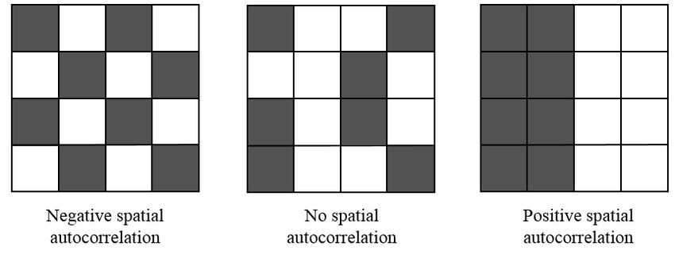
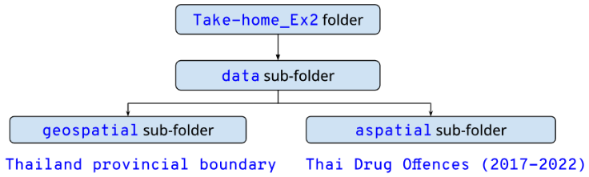
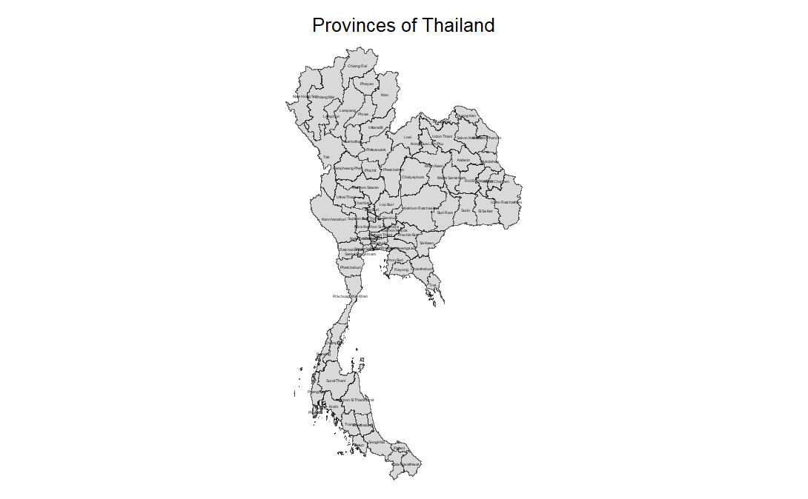
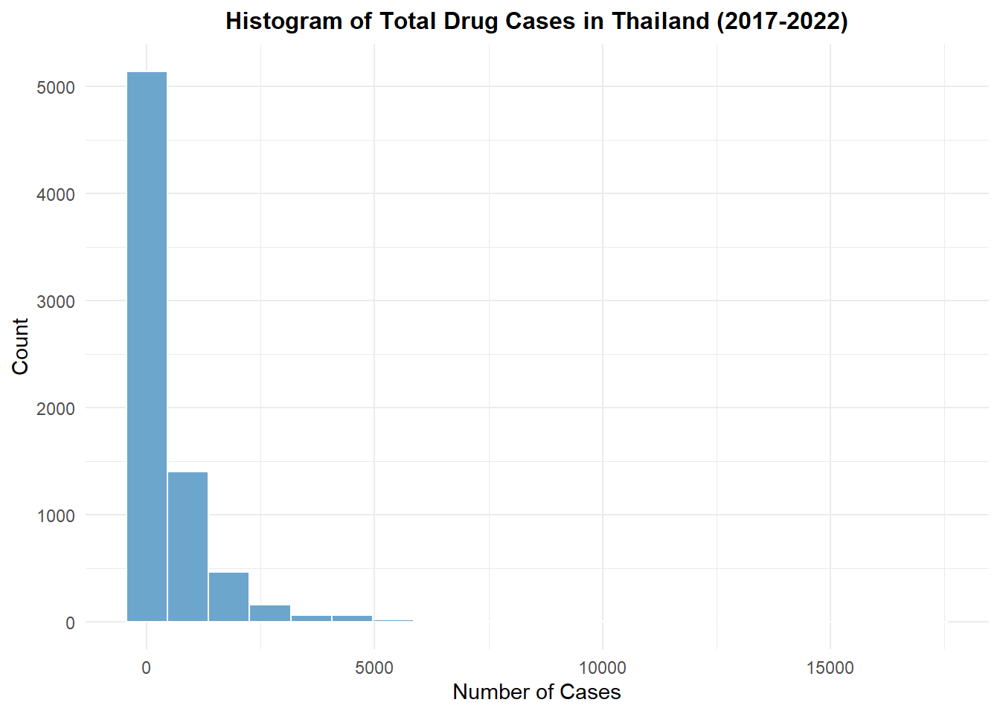
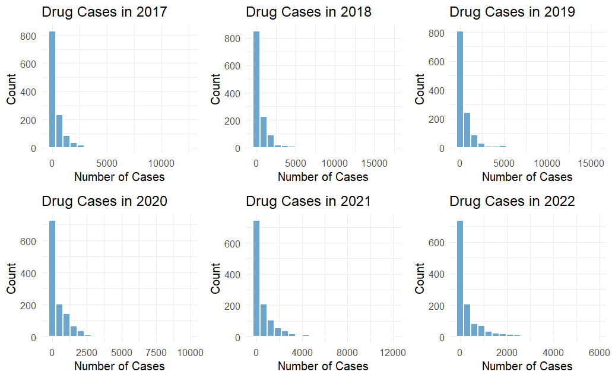
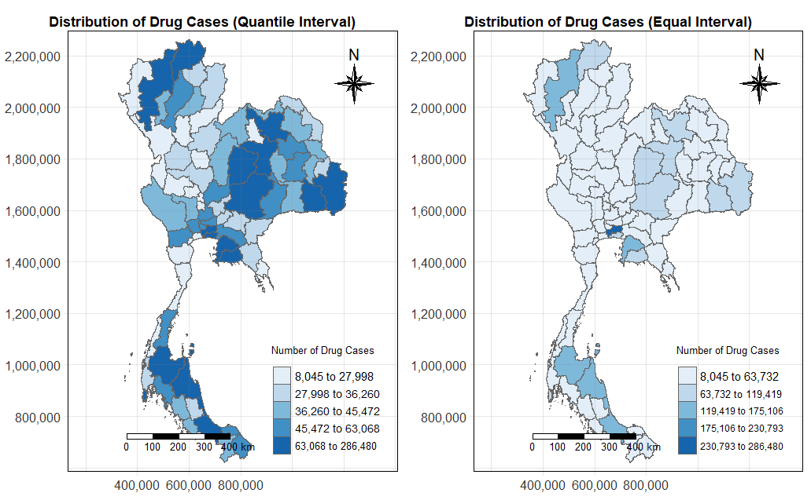
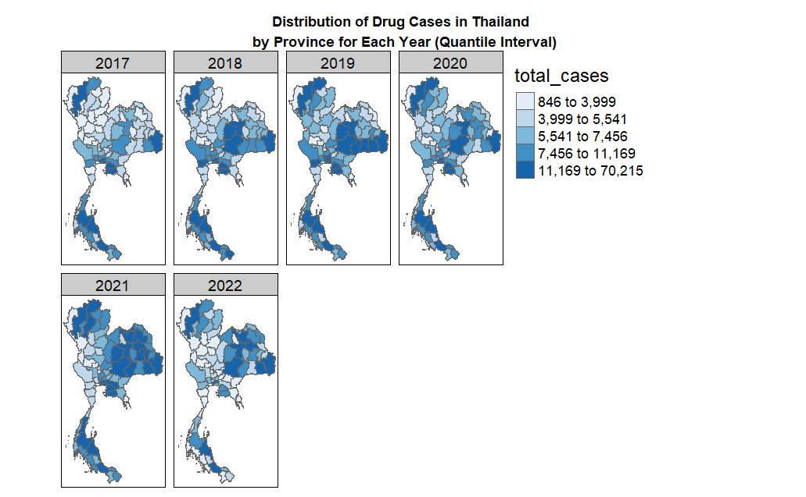
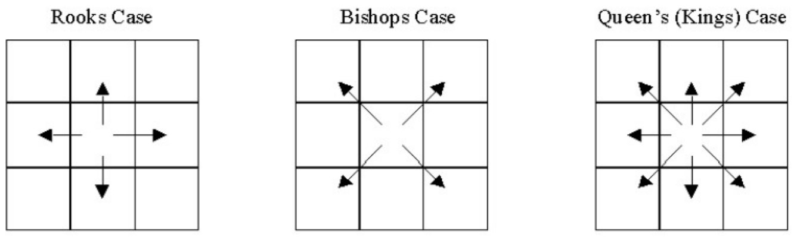
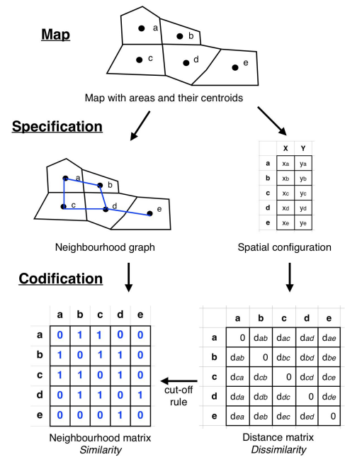

pacman::p_load(sf, st, tidyverse, lubridate, sfdep, tmap, ggplot2, knitr, Kendall)Take-home Exercise 2
Harnessing Geospatial Methods to Analyse Drug Abuse Patterns in Thailand
1. Setting the Scene: Drug Abuse in Thailand
In 2022, 567,609 drug users in ASEAN were treated, in which Thailand was found to have the highest number of drug users requiring treatment among ASEAN countries, followed by Malaysia, Indonesia, Laos, the Philippines, and Singapore. (Kahanto M., et al, 2022) Drug abuse is a significant social issue in Thailand, with profound health, financial, and societal implications. Positioned near the Golden Triangle—one of the largest drug production areas in Asia—Thailand faces ongoing challenges due to its geographical proximity and extensive transportation routes, which facilitate drug trafficking. Within Thailand, drug abuse is particularly prevalent among the youth, with approximately 2.7 million young people involved. Of those aged 15–19, around 300,000 are in need of drug treatment, and vocational students are disproportionately affected compared to their peers in secondary school.
This underscores the importance of drug treatment in addressing the complex problem of substance abuse and reduces the societal costs associated with drug abuse, such as healthcare expenses, lost productivity, and crime. Hence, to better allocate resources and develop targeted interventions, it is crucial to understand where drug abuse is most concentrated and how it spreads geographically. This is where geospatial analysis becomes essential.
In this exercise, I will utilise geospatial analysis methods to explore the province-level dynamics of drug abuse in Thailand. This will involve preparing a study area layer as sf polygon features at the province level, including Bangkok, and creating a drug abuse indicators layer within this study area. Using these extracted data layers, I will conduct global spatial autocorrelation analysis using sfdep methods, followed by local spatial autocorrelation analysis. Finally, I will describe the spatial patterns revealed by determining whether key indicators are spatially dependent, and identifying trends of clusters, outliers and hotspots over time.
2. Methods Used
2.1 Spatial Autocorrelation
This quote from Tobler (1970) highlights the essence of spatial autocorrelation, emphasising the importance of studying how values of the same variable are interconnected across space. By examining spatial dependence, we can better understand local and global patterns and variations. This law suggests that phenomena that are geographically close to each other are more likely to be similar or have some kind of spatial relationship compared to phenomena that are farther apart.
It is also important to note that spatial structure and spatial autocorrelation are inherently interconnected (Tiefelsdorf, 1998):
Spatial structure encompasses all the connections through which the autocorrelated phenomenon spreads.
Without a significant autocorrelated process, spatial structure cannot be empirically observed.
Thus, the observed spatial distribution is regarded as a reflection of the underlying spatial process. When spatial autocorrelation is present, the value of a variable at a given observation is connected to the values of that same variable at neighbouring observations:

Configuration of areas showing different types of autocorrelation (Nguyen K. et al., 2022)
Positive Spatial Autocorrelation occurs when similar values of the variable cluster geographically.
Negative Spatial Autocorrelation arises when dissimilar values are geographically close, indicating that nearby locations tend to differ more than those that are farther apart. This situation often reflects spatial competition.
In the absence of spatial autocorrelation, the distribution of observations can be considered random.
2.2 Cluster and Outlier Analysis
Cluster and Outlier Analysis can be effectively applied using Local Moran’s I, Local Geary’s C, Moran scatterplots, and LISA Cluster Maps to identify and understand spatial patterns in data. Here’s how each of these methods can be utilised
2.2.1 Local Moran’s I and Local Geary’s C
Local Moran’s I: This statistic assesses local spatial autocorrelation by measuring the degree of similarity of a location’s value to those of its neighbours. It identifies clusters of high or low values (hotspots and cold spots) and outliers (areas where a value is significantly different from its neighbours). By calculating Local Moran’s I for each location, we can highlight areas with significant spatial dependence, helping to identify regions where interventions may be needed.
Local Geary’s C: Similar to Local Moran’s I, Local Geary’s C focuses on differences rather than similarities. It quantifies the spatial variation between nearby locations, emphasising dissimilarity. This method can help detect spatial competition, where nearby areas have contrasting values. By using Local Geary’s C, we can uncover regions that may experience conflicting trends or behaviours, providing insights into localised dynamics.
2.22. Moran Scatterplot
The Moran scatterplot visualises the relationship between the value of a variable at a location and the average value of its neighbours. We can plot scatterplot to represent a location, with the x-axis showing the local mean of neighbouring values and the y-axis showing the local value.
Plots like this can help us in identifying clusters (high-high or low-low) and outliers (high-low or low-high). The scatterplot can reveal spatial patterns that are not immediately obvious.
2.2.3. LISA Cluster Map
A LISA Cluster Map visually represents the results of Local Indicators of Spatial Association, indicating the spatial clusters of similar values (hotspots) and outliers.
I will use these maps to quickly identify regions of interest such that areas identified as hotspots will be marked in red to signify high values surrounded by high values, while cold spots will be marked in blue for low values surrounded by low values. Outliers will be highlighted in contrasting colours.
2.3 Emerging Hot Spot Analysis
There are different methods for analysing spatial patterns and detecting hotspots including spatial autocorrelation and cluster analysis. Emerging Hot Spot Analysis (EHSA) is a specific spatio-temporal method used to examine hotspots over a designated observation period. It integrates two well-known techniques: the traditional Getis-Ord Gi* statistic for hotspot detection and the Mann-Kendall test for assessing monotonic trends over time. The main goal of EHSA is to analyse how hot and cold spots change over time, focusing on whether these areas are increasing in intensity, decreasing, or remaining constant.
3. Importing Packages into R
Let’s load all the required packages for conducting our analysis.
sf: provides a standardised way to encode spatial vector data in R environment, facilitating spatial data operations and analysis.st: create simple features from numeric vectors, matrices, or lists, enabling the representation and manipulation of spatial structures in R.tidyverse: a collection of R packages designed for data science. All packages share an underlying design philosophy, grammar, and data structure.sfdep: for computing spatial weights, global and local spatial autocorrelation statisticstmap: for creating static and interactive visualisations and maps.ggplot2: for creating advanced visualisations, graphics and maps using the Grammar of Graphics.knitr: for dynamic report generation in R using Literate Programming techniques.Kendall: for computing the Kendall rank correlation and Mann-Kendall trend test
4. Importing Datasets into R

We will be leveraging two datasets in this exercise. The first dataset to be used is Thailand’s provincial boundary is tha_admbnda_adm1_rtsd_20220121 which exists in ESRI .shp format and is based on the Thailand geographic coordinate system. This dataset is extracted from Thailand - Subnational Administrative Boundaries via the HDX portal.
The second dataset thai_drug_offenses_2017_2022 consists of aspatial data in a CSV format that contains reported cases of drug offences in Thailand from 2017 to 2022. The dataset is extracted from Thailand Drug Offenses [2017-2022] in Kaggle.
4.1 Importing Geospatial Data
In this section, st_read() of sf package will be used to import tha_admbnda_adm1_rtsd_20220121 dataset into the R environment. The st_transform() function below converts the CRS of the sf object to EPSG:32647 which maps to Thailand’s UTM zone, particularly for Western/Central parts.
thai_boundary <- st_read(dsn = "data/geospatial",layer = "tha_admbnda_adm1_rtsd_20220121") %>% st_transform(crs = 32647)Reading layer `tha_admbnda_adm1_rtsd_20220121' from data source
`C:\SamanthaxFoo\IS415-GAA\Take-home_Ex\Take-home_Ex2\data\geospatial'
using driver `ESRI Shapefile'
Simple feature collection with 77 features and 16 fields
Geometry type: MULTIPOLYGON
Dimension: XY
Bounding box: xmin: 97.34336 ymin: 5.613038 xmax: 105.637 ymax: 20.46507
Geodetic CRS: WGS 84# Inspect data
glimpse(thai_boundary)Rows: 77
Columns: 17
$ Shape_Leng <dbl> 2.417227, 1.695100, 1.251111, 1.884945, 3.041716, 1.739908,…
$ Shape_Area <dbl> 0.13133873, 0.07926199, 0.05323766, 0.12698345, 0.21393797,…
$ ADM1_EN <chr> "Bangkok", "Samut Prakan", "Nonthaburi", "Pathum Thani", "P…
$ ADM1_TH <chr> "กรุงเทพมหานคร", "สมุทรปราการ", "นนทบุรี", "ปทุมธานี", "พระนครศรีอ…
$ ADM1_PCODE <chr> "TH10", "TH11", "TH12", "TH13", "TH14", "TH15", "TH16", "TH…
$ ADM1_REF <chr> NA, NA, NA, NA, NA, NA, NA, NA, NA, NA, NA, NA, NA, NA, NA,…
$ ADM1ALT1EN <chr> NA, NA, NA, NA, NA, NA, NA, NA, NA, NA, NA, NA, NA, NA, NA,…
$ ADM1ALT2EN <chr> NA, NA, NA, NA, NA, NA, NA, NA, NA, NA, NA, NA, NA, NA, NA,…
$ ADM1ALT1TH <chr> NA, NA, NA, NA, NA, NA, NA, NA, NA, NA, NA, NA, NA, NA, NA,…
$ ADM1ALT2TH <chr> NA, NA, NA, NA, NA, NA, NA, NA, NA, NA, NA, NA, NA, NA, NA,…
$ ADM0_EN <chr> "Thailand", "Thailand", "Thailand", "Thailand", "Thailand",…
$ ADM0_TH <chr> "ประเทศไทย", "ประเทศไทย", "ประเทศไทย", "ประเทศไทย", "ประเทศ…
$ ADM0_PCODE <chr> "TH", "TH", "TH", "TH", "TH", "TH", "TH", "TH", "TH", "TH",…
$ date <date> 2019-02-18, 2019-02-18, 2019-02-18, 2019-02-18, 2019-02-18…
$ validOn <date> 2022-01-22, 2022-01-22, 2022-01-22, 2022-01-22, 2022-01-22…
$ validTo <date> -001-11-30, -001-11-30, -001-11-30, -001-11-30, -001-11-30…
$ geometry <MULTIPOLYGON [m]> MULTIPOLYGON (((674339.8 15..., MULTIPOLYGON (…Let’s verify the coordinate reference systems of the thai_boundary object to ensure the assignment of the correct CRS value.
st_crs(thai_boundary)Coordinate Reference System:
User input: EPSG:32647
wkt:
PROJCRS["WGS 84 / UTM zone 47N",
BASEGEOGCRS["WGS 84",
ENSEMBLE["World Geodetic System 1984 ensemble",
MEMBER["World Geodetic System 1984 (Transit)"],
MEMBER["World Geodetic System 1984 (G730)"],
MEMBER["World Geodetic System 1984 (G873)"],
MEMBER["World Geodetic System 1984 (G1150)"],
MEMBER["World Geodetic System 1984 (G1674)"],
MEMBER["World Geodetic System 1984 (G1762)"],
MEMBER["World Geodetic System 1984 (G2139)"],
ELLIPSOID["WGS 84",6378137,298.257223563,
LENGTHUNIT["metre",1]],
ENSEMBLEACCURACY[2.0]],
PRIMEM["Greenwich",0,
ANGLEUNIT["degree",0.0174532925199433]],
ID["EPSG",4326]],
CONVERSION["UTM zone 47N",
METHOD["Transverse Mercator",
ID["EPSG",9807]],
PARAMETER["Latitude of natural origin",0,
ANGLEUNIT["degree",0.0174532925199433],
ID["EPSG",8801]],
PARAMETER["Longitude of natural origin",99,
ANGLEUNIT["degree",0.0174532925199433],
ID["EPSG",8802]],
PARAMETER["Scale factor at natural origin",0.9996,
SCALEUNIT["unity",1],
ID["EPSG",8805]],
PARAMETER["False easting",500000,
LENGTHUNIT["metre",1],
ID["EPSG",8806]],
PARAMETER["False northing",0,
LENGTHUNIT["metre",1],
ID["EPSG",8807]]],
CS[Cartesian,2],
AXIS["(E)",east,
ORDER[1],
LENGTHUNIT["metre",1]],
AXIS["(N)",north,
ORDER[2],
LENGTHUNIT["metre",1]],
USAGE[
SCOPE["Navigation and medium accuracy spatial referencing."],
AREA["Between 96°E and 102°E, northern hemisphere between equator and 84°N, onshore and offshore. China. Indonesia. Laos. Malaysia - West Malaysia. Mongolia. Myanmar (Burma). Russian Federation. Thailand."],
BBOX[0,96,84,102]],
ID["EPSG",32647]]Before we delve into further data analysis, it is crucial that we first understand the levels of administration that makes up Thailand today. In particular, Thailand has 4 levels of administration, i.e. level 0 (country), 1 (province), 2 (district), and 3 (sub-district) boundaries. Thailand comprises 76 provinces (known as จังหวัด in Thai or changwat in English), along with one special administrative area, Bangkok, the capital.
- These provinces function as the main local government units and possess legal personhood.
- Each province is subdivided into amphoe (districts), which are further broken down into tambon (sub-districts), representing the next tier of local governance.
- For this analysis, I will only focus on the province administration level.
We can visualise the structure of our geospatial object as such.
tmap_mode("plot")
# Plot the provinces of Thailand with labels
tm_shape(thai_boundary) +
tm_borders(col = "black", lwd = 0.3, alpha = 0.6) +
tm_polygons()+
tm_layout(
main.title = "Provinces of Thailand",
main.title.size = 1,
main.title.position = "center",
legend.show = FALSE,
frame = FALSE
) +
tm_text("ADM1_EN", size = 0.2)
4.2 Importing Aspatial Data
In this section, read_csv() of sf package will be used to import the csv file into the R environment. The output is a R dataframe class containing 5 unique columns of drug offences in Thailand from 2017 - 2022.
drug_cases <- read_csv("data/aspatial/thai_drug_offenses_2017_2022.csv")Rows: 7392 Columns: 5
── Column specification ────────────────────────────────────────────────────────
Delimiter: ","
chr (3): types_of_drug_offenses, province_th, province_en
dbl (2): fiscal_year, no_cases
ℹ Use `spec()` to retrieve the full column specification for this data.
ℹ Specify the column types or set `show_col_types = FALSE` to quiet this message.head(drug_cases)# A tibble: 6 × 5
fiscal_year types_of_drug_offenses no_cases province_th province_en
<dbl> <chr> <dbl> <chr> <chr>
1 2017 drug_use_cases 11871 กรุงเทพมหานคร Bangkok
2 2017 drug_use_cases 200 ชัยนาท Chai Nat
3 2017 drug_use_cases 553 นนทบุรี Nonthaburi
4 2017 drug_use_cases 450 ปทุมธานี Pathum Thani
5 2017 drug_use_cases 378 พระนครศรีอยุธยา Phra Nakhon Si Ayut…
6 2017 drug_use_cases 727 ลพบุรี Loburi | Column Name | Data Type | Description |
| fiscal_year | <dbl> | The fiscal year during which the drug offenses were recorded. |
| types_of_drug_offenses | <chr> | The specific type or category of drug offence being reported. |
| no_cases | <dbl> | The total number of cases recorded for the specific combination of fiscal year |
| province_th | <chr> | The name of the province in Thailand, written in Thai. |
| province_en | <chr> | The name of the province in Thailand, written in English. |
4.3 Performing a Join on Geometry Column
Next, we will want to aggregate the total number of drug use cases according to each 77 provinces in Thailand. Here, I use left_join() to associate each drug use case to its respective province (i.e. the geometry of the drug case).
library(dplyr)
# Step 1: Count rows before the join
initial_row_count <- nrow(drug_cases)
# Step 2: Perform the join and convert to sf
drug_cases <- drug_cases %>%
left_join(thai_boundary %>% select(geometry, ADM1_EN, ADM1_PCODE),
by = c("province_en" = "ADM1_EN")) %>%
st_as_sf()
# Step 3: Count rows after the join
final_row_count <- nrow(drug_cases)
# Step 4: Check if rows were dropped
if (initial_row_count != final_row_count) {
cat("Rows were dropped during the join.\n")
cat("Rows before join:", initial_row_count, "\n")
cat("Rows after join:", final_row_count, "\n")
} else {
cat("No rows were dropped during the join.\n")
}No rows were dropped during the join.glimpse(drug_cases)Rows: 7,392
Columns: 7
$ fiscal_year <dbl> 2017, 2017, 2017, 2017, 2017, 2017, 2017, 2017,…
$ types_of_drug_offenses <chr> "drug_use_cases", "drug_use_cases", "drug_use_c…
$ no_cases <dbl> 11871, 200, 553, 450, 378, 727, 820, 69, 127, 2…
$ province_th <chr> "กรุงเทพมหานคร", "ชัยนาท", "นนทบุรี", "ปทุมธานี", "พร…
$ province_en <chr> "Bangkok", "Chai Nat", "Nonthaburi", "Pathum Th…
$ ADM1_PCODE <chr> "TH10", "TH18", "TH12", "TH13", "TH14", NA, "TH…
$ geometry <MULTIPOLYGON [m]> MULTIPOLYGON (((674339.8 15..., MU…5. Data Wrangling
5.1 Reduce Data Size
To reduce the memory load, we can drop the province names in Thai from our aspatial dataset as it is not relevant for this study.
drug_cases <- subset(drug_cases, select = c(-province_th))
head(drug_cases)Simple feature collection with 6 features and 5 fields (with 1 geometry empty)
Geometry type: MULTIPOLYGON
Dimension: XY
Bounding box: xmin: 577383.3 ymin: 1492136 xmax: 710569.3 ymax: 1704842
Projected CRS: WGS 84 / UTM zone 47N
# A tibble: 6 × 6
fiscal_year types_of_drug_offenses no_cases province_en ADM1_PCODE
<dbl> <chr> <dbl> <chr> <chr>
1 2017 drug_use_cases 11871 Bangkok TH10
2 2017 drug_use_cases 200 Chai Nat TH18
3 2017 drug_use_cases 553 Nonthaburi TH12
4 2017 drug_use_cases 450 Pathum Thani TH13
5 2017 drug_use_cases 378 Phra Nakhon Si Ayuttha… TH14
6 2017 drug_use_cases 727 Loburi <NA>
# ℹ 1 more variable: geometry <MULTIPOLYGON [m]>We’ll also only retain columns that are most useful from thai_boundary.
thai_boundary <- subset(thai_boundary, select = c(Shape_Leng, Shape_Area, ADM1_EN, ADM1_PCODE, geometry))
head(thai_boundary)Simple feature collection with 6 features and 4 fields
Geometry type: MULTIPOLYGON
Dimension: XY
Bounding box: xmin: 628303 ymin: 1490796 xmax: 712440.5 ymax: 1636901
Projected CRS: WGS 84 / UTM zone 47N
Shape_Leng Shape_Area ADM1_EN ADM1_PCODE
1 2.417227 0.13133873 Bangkok TH10
2 1.695100 0.07926199 Samut Prakan TH11
3 1.251111 0.05323766 Nonthaburi TH12
4 1.884945 0.12698345 Pathum Thani TH13
5 3.041716 0.21393797 Phra Nakhon Si Ayutthaya TH14
6 1.739908 0.07920961 Ang Thong TH15
geometry
1 MULTIPOLYGON (((674339.8 15...
2 MULTIPOLYGON (((687139.8 15...
3 MULTIPOLYGON (((644817.9 15...
4 MULTIPOLYGON (((704086 1575...
5 MULTIPOLYGON (((662941.6 16...
6 MULTIPOLYGON (((643472.8 16...5.2 Fixing Missing Values
There are no troublesome rows in the drug_cases dataframe.
any(is.na(thai_boundary))[1] FALSE#thai_boundary[!complete.cases(st_drop_geometry(thai_boundary)), ]any(is.na(drug_cases))[1] TRUE5.2.1 Identify Missing Values
We can observe 192 reported offences that do not include the ADM1_PCODE as seen from how some rows contain empty values ‘NA’. We are also getting the 192 empty geometry values as returned from the null test below.
drug_cases %>%
filter(is.na(ADM1_PCODE)) %>%
select(province_en, ADM1_PCODE)Simple feature collection with 192 features and 2 fields (with 192 geometries empty)
Geometry type: MULTIPOLYGON
Dimension: XY
Bounding box: xmin: NA ymin: NA xmax: NA ymax: NA
Projected CRS: WGS 84 / UTM zone 47N
# A tibble: 192 × 3
province_en ADM1_PCODE geometry
<chr> <chr> <MULTIPOLYGON [m]>
1 Loburi <NA> EMPTY
2 buogkan <NA> EMPTY
3 Loburi <NA> EMPTY
4 buogkan <NA> EMPTY
5 Loburi <NA> EMPTY
6 buogkan <NA> EMPTY
7 Loburi <NA> EMPTY
8 buogkan <NA> EMPTY
9 Loburi <NA> EMPTY
10 buogkan <NA> EMPTY
# ℹ 182 more rowsThe root cause of this problem lies in how these two province names were incorrectly spelled in the province_en column of drug_casses , causing an incomplete left_join() to be executed.
unique(drug_cases[!complete.cases(st_drop_geometry(drug_cases)), ][c('province_en')])Simple feature collection with 2 features and 1 field (with 2 geometries empty)
Geometry type: MULTIPOLYGON
Dimension: XY
Bounding box: xmin: NA ymin: NA xmax: NA ymax: NA
Projected CRS: WGS 84 / UTM zone 47N
# A tibble: 2 × 2
province_en geometry
<chr> <MULTIPOLYGON [m]>
1 Loburi EMPTY
2 buogkan EMPTYthai_boundary %>%
filter(ADM1_EN == "Lop Buri" | ADM1_EN == "Bueng Kan") %>%
select(ADM1_PCODE, ADM1_EN) %>%
as_tibble()# A tibble: 2 × 3
ADM1_PCODE ADM1_EN geometry
<chr> <chr> <MULTIPOLYGON [m]>
1 TH16 Lop Buri (((751293.3 1742960, 751337.4 1742928, 751437.2 1742942,…
2 TH38 Bueng Kan (((965496 2045531, 965625.5 2045528, 965836.6 2045537, 9…5.2.2 Fix Missing Values Discovered
Let’s fix these NA values by transforming the two province names to their correct names.
- Step 1: Replace Loburi –> Lop Buri, buogkan –> Bueng Kan
- Step 2: Replace ‘NA’
ADM1_PCDOEwith the correct province code - TH16 and TH38 for Lop Buri and Bueng Kan respectively - Step 3: Replace the existing geometry column in
drug_caseswith the right geometry
# Extract the geometry for Lop Buri
lop_buri_geometry <- drug_cases %>%
filter(province_en == "Lop Buri") %>%
reframe(first_geometry = st_union(geometry)) %>%
pull(first_geometry)
# Extract the geometry for Bueng Kan
bueng_kan_geometry <- drug_cases %>%
filter(province_en == "Bueng Kan") %>%
reframe(first_geometry = st_union(geometry)) %>%
pull(first_geometry)
# Fix incorrect province names
drug_cases <- drug_cases %>%
mutate(
province_en = case_when(
province_en == "Loburi" ~ "Lop Buri",
province_en == "buogkan" ~ "Bueng Kan",
TRUE ~ province_en
)
)
# Fix empty province code
drug_cases <- drug_cases %>%
mutate(ADM1_PCODE = ifelse(province_en == "Lop Buri" &
is.na(ADM1_PCODE),"TH16",
ifelse(province_en == "Bueng Kan" &
is.na(ADM1_PCODE),"TH38", ADM1_PCODE)))
# Fix empty geometry
thai_boundary_no_geom <- thai_boundary %>%
select(ADM1_EN, geometry)
drug_cases <- drug_cases %>%
st_drop_geometry() %>%
left_join(thai_boundary_no_geom, by = c("province_en" = "ADM1_EN"))
drug_cases <- st_as_sf(drug_cases)We have successfully removed all NA values found in drug_cases.
any(is.na(drug_cases))[1] FALSE# Check the updated drug_cases
drug_cases[!complete.cases(st_drop_geometry(drug_cases)), ]Simple feature collection with 0 features and 5 fields
Bounding box: xmin: NA ymin: NA xmax: NA ymax: NA
Projected CRS: WGS 84 / UTM zone 47N
# A tibble: 0 × 6
# ℹ 6 variables: fiscal_year <dbl>, types_of_drug_offenses <chr>,
# no_cases <dbl>, province_en <chr>, ADM1_PCODE <chr>,
# geometry <GEOMETRY [m]>5.3 Create New total_cases Column
Next, I create a new dataframe drug_cases_province to count the total number of cases per province.
drug_cases_province <- drug_cases %>%
group_by(province_en) %>%
summarise(
total_cases = sum(no_cases),
ADM1_PCODE = first(ADM1_PCODE),
geometry = first(geometry),
.groups = "drop"
) %>%
st_as_sf()
print(drug_cases_province)Simple feature collection with 77 features and 3 fields
Geometry type: MULTIPOLYGON
Dimension: XY
Bounding box: xmin: 325178.8 ymin: 620860.6 xmax: 1213656 ymax: 2263241
Projected CRS: WGS 84 / UTM zone 47N
# A tibble: 77 × 4
province_en total_cases ADM1_PCODE geometry
<chr> <dbl> <chr> <MULTIPOLYGON [m]>
1 Amnat Charoen 35435 TH37 (((1137720 1809629, 1137724 1809622, 11…
2 Ang Thong 16168 TH15 (((643472.8 1636469, 643496 1636423, 64…
3 Bangkok 286480 TH10 (((674339.8 1543300, 674382.3 1543278, …
4 Bueng Kan 35287 TH38 (((965496 2045531, 965625.5 2045528, 96…
5 Buri Ram 57352 TH31 (((921217 1750212, 921217 1750211, 9212…
6 Chachoengsao 53514 TH24 (((722656.1 1546054, 722796 1546041, 72…
7 Chai Nat 15310 TH18 (((620165.4 1704256, 620291.4 1704247, …
8 Chaiyaphum 64497 TH36 (((772997.4 1851276, 773104.5 1851216, …
9 Chanthaburi 31473 TH22 (((853764.8 1360716, 853783.1 1360713, …
10 Chiang Mai 121812 TH50 (((554883.3 2226795, 555000.6 2226791, …
# ℹ 67 more rowsI will also create a new drug_cases_province_year to aggregate the total number of cases for each province and based on each year, regardless of drug offense type.
drug_cases_province_year <- drug_cases %>%
group_by(province_en, fiscal_year) %>%
summarise(
fiscal_year = first(fiscal_year),
total_cases = sum(no_cases),
ADM1_PCODE = first(ADM1_PCODE),
geometry = first(geometry),
.groups = "drop"
) %>%
st_as_sf()
print(drug_cases_province_year)Simple feature collection with 462 features and 4 fields
Geometry type: MULTIPOLYGON
Dimension: XY
Bounding box: xmin: 325178.8 ymin: 620860.6 xmax: 1213656 ymax: 2263241
Projected CRS: WGS 84 / UTM zone 47N
# A tibble: 462 × 5
province_en fiscal_year total_cases ADM1_PCODE geometry
<chr> <dbl> <dbl> <chr> <MULTIPOLYGON [m]>
1 Amnat Charoen 2017 5076 TH37 (((1137720 1809629, 1137724…
2 Amnat Charoen 2018 5651 TH37 (((1137720 1809629, 1137724…
3 Amnat Charoen 2019 7339 TH37 (((1137720 1809629, 1137724…
4 Amnat Charoen 2020 3949 TH37 (((1137720 1809629, 1137724…
5 Amnat Charoen 2021 8961 TH37 (((1137720 1809629, 1137724…
6 Amnat Charoen 2022 4459 TH37 (((1137720 1809629, 1137724…
7 Ang Thong 2017 1614 TH15 (((643472.8 1636469, 643496…
8 Ang Thong 2018 2717 TH15 (((643472.8 1636469, 643496…
9 Ang Thong 2019 2781 TH15 (((643472.8 1636469, 643496…
10 Ang Thong 2020 2636 TH15 (((643472.8 1636469, 643496…
# ℹ 452 more rows6. Exploratory Geospatial Data Analysis
6.1 Overall Histogram of Drug Cases
I employed the geom_histogram function of the ggplot package to plot histogram distributions of the spread of the number of drug cases found in Thailand from 2017 to 2022.
Overall, the number of cases appears to be relatively right-skewed with some outliers indicating a significantly high number of drug cases.
ggplot(drug_cases, aes(x = no_cases)) +
geom_histogram(bins = 20, color = "white", fill = "skyblue3") +
labs(x = "Number of Cases", y = "Count", title = "Histogram of Total Drug Cases in Thailand (2017-2022)") +
theme_minimal() +
theme(
plot.title = element_text(hjust = 0.5, size = 12, face = "bold")
)
6.2 Histogram of Drug Cases by Year
Based on each year category, we see that there is a similar pattern of drug cases skewed towards the lower end with an uneven distribution.
library(ggplot2)
library(gridExtra)
library(dplyr)
# Create histogram for each year
drug_cases_2017 <- filter(drug_cases, fiscal_year == 2017)
hist_2017 <- ggplot(drug_cases_2017, aes(x = no_cases)) +
geom_histogram(bins = 20, color = "white", fill = "skyblue3") +
labs(x = "Number of Cases", y = "Count", title = "Drug Cases in 2017") +
theme_minimal(base_size = 9)
drug_cases_2018 <- filter(drug_cases, fiscal_year == 2018)
hist_2018 <- ggplot(drug_cases_2018, aes(x = no_cases)) +
geom_histogram(bins = 20, color = "white", fill = "skyblue3") +
labs(x = "Number of Cases", y = "Count", title = "Drug Cases in 2018") +
theme_minimal(base_size = 9)
drug_cases_2019 <- filter(drug_cases, fiscal_year == 2019)
hist_2019 <- ggplot(drug_cases_2019, aes(x = no_cases)) +
geom_histogram(bins = 20, color = "white", fill = "skyblue3") +
labs(x = "Number of Cases", y = "Count", title = "Drug Cases in 2019") +
theme_minimal(base_size = 9)
drug_cases_2020 <- filter(drug_cases, fiscal_year == 2020)
hist_2020 <- ggplot(drug_cases_2020, aes(x = no_cases)) +
geom_histogram(bins = 20, color = "white", fill = "skyblue3") +
labs(x = "Number of Cases", y = "Count", title = "Drug Cases in 2020") +
theme_minimal(base_size = 9)
drug_cases_2021 <- filter(drug_cases, fiscal_year == 2021)
hist_2021 <- ggplot(drug_cases_2021, aes(x = no_cases)) +
geom_histogram(bins = 20, color = "white", fill = "skyblue3") +
labs(x = "Number of Cases", y = "Count", title = "Drug Cases in 2021") +
theme_minimal(base_size = 9)
drug_cases_2022 <- filter(drug_cases, fiscal_year == 2022)
hist_2022 <- ggplot(drug_cases_2022, aes(x = no_cases)) +
geom_histogram(bins = 20, color = "white", fill = "skyblue3") +
labs(x = "Number of Cases", y = "Count", title = "Drug Cases in 2022") +
theme_minimal(base_size = 9)
# Arrange all histograms in a grid layout
grid.arrange(hist_2017, hist_2018, hist_2019, hist_2020, hist_2021, hist_2022, nrow = 2)
6.3 Overall Plot of Drug Cases
As such, an quantile interval will be more suitable in plotting the total number of cases for each province as shown in the tmap output below. Additionally, we can use the default break of 5 to capture a suitable level of granularity across all provinces. For comparison purposes, I will also plot the equal scale as shown.
# First plot using quantile interval
plot_quantile <- tm_shape(drug_cases_province) +
tm_polygons("total_cases",
style = "quantile",
palette = "Blues",
n = 5,
title = "Number of Drug Cases") +
tm_layout(main.title = "Distribution of Drug Cases in Thailand \n by Province (Quantile Interval)",
main.title.position = "center",
main.title.size = 0.7,
main.title.fontface = "bold",
legend.height = 0.45,
legend.width = 0.35,
frame = TRUE) +
tm_borders(alpha = 0.5) +
tm_compass(type = "8star", size = 2, position = c("right", "top")) +
tm_scale_bar() +
tm_grid(alpha = 0.2)
# Second plot using equal interval
plot_equal <- tm_shape(drug_cases_province) +
tm_polygons("total_cases",
style = "equal",
palette = "Blues",
n = 5,
title = "Number of Drug Cases") +
tm_layout(main.title = "Distribution of Drug Cases in Thailand \n by Province (Equal Interval)",
main.title.position = "center",
main.title.size = 0.7,
main.title.fontface = "bold",
legend.height = 0.45,
legend.width = 0.35,
frame = TRUE) +
tm_borders(alpha = 0.5) +
tm_compass(type = "8star", size = 2, position = c("right", "top")) +
tm_scale_bar() +
tm_grid(alpha = 0.2)
# Combine both plots side by side
tmap_arrange(plot_quantile, plot_equal, nrow = 1)
Observations
Overall, we can observe that the highest number of drug cases are found in the north-western, central, eastern and southern provinces of Thailand as seen in the darker regions. Namely..
- North-west: Chiang Mai, Chiang Rai
- Central: Chaiyaphum, Khon Kaen and Nakhon-Ratchasima
- East: Sisaket, Ubon-Ratchathani
- South: Surat Thani, Nakhon Si Thammarat, Phuket
It is worth noting that smaller provinces are likely to be lighter in shade due to their smaller geographic area.
6.4 Plot of Drug Cases by Year
When we further categorise the drug cases by year, we can see that there is an even spread of cases
plot_quantile_year <- tm_shape(drug_cases_province_year) +
tm_polygons("total_cases",
style = "quantile",
palette = "Blues") +
tm_facets(by="fiscal_year", free.coords = FALSE) +
tm_layout(main.title = "Distribution of Drug Cases in Thailand \n by Province for Each Year (Quantile Interval)",
main.title.position = "center",
main.title.size = 0.7,
main.title.fontface = "bold",
legend.height = 0.45,
legend.width = 0.35,
frame = TRUE)
plot_quantile_year
# Load necessary libraries
library(tmap)
library(knitr)
# Create temporal maps
temporal_maps <- tm_shape(drug_cases_province_year) +
tm_polygons("total_cases",
palette = "Blues",
style = "quantile",
title = "Drug Cases") +
tm_borders(col = "black", alpha = 0.6) +
tm_layout(legend.title.size = 1.8,
legend.text.size = 1.5) +
tm_facets(along = "fiscal_year", free.coords = FALSE)
# Generate animation
tmap_animation(temporal_maps, filename = "thailand_drugs_temporal.gif",
delay = 150, width = 1000, height = 1200)Creating frames================================================================================
Creating animation
Animation saved to C:\SamanthaxFoo\IS415-GAA\Take-home_Ex\Take-home_Ex2\thailand_drugs_temporal.gif # Include the generated GIF
knitr::include_graphics("thailand_drugs_temporal.gif")
7. Global Measures of Spatial Autocorrelation
7.1 Methods Used
This section delves into analysing the spatial autocorrelation of our drug cases dataset and assessing how the presence of drug abuse in a province may influence and form clusters around it.


<INSERT THE THREE TYPES OF METHODS>
7.2 Computing Contiguity Neighbours
I decided to use the Queen criterion in deriving our neighbour list object. To do so, we will utilise the st_contiguity() function from the sfdep package to create contiguity weight matrices for the study area. This function generates a list of neighbors based on provinces that share contiguous boundaries. It is worth noting that the function only supports the rook and queen criteria which is suitable for our analysis.
thailand_nb_q <- st_contiguity(drug_cases_province, queen=TRUE)
summary(thailand_nb_q)Neighbour list object:
Number of regions: 77
Number of nonzero links: 352
Percentage nonzero weights: 5.93692
Average number of links: 4.571429
1 region with no links:
48
2 disjoint connected subgraphs
Link number distribution:
0 1 2 3 4 5 6 7 8 9
1 1 5 17 15 17 10 5 4 2
1 least connected region:
71 with 1 link
2 most connected regions:
17 69 with 9 linksEach number returned above is an ID assigned to each province from the st_contiguity() function. Let’s find out the specific provinces highlighted by the summary above!
province_ids <- data.frame(
region_id = seq_along(drug_cases_province$province_en),
province_en = drug_cases_province$province_en
)
province_ids[province_ids$region_id %in% c(17, 48, 69, 71), ] region_id province_en
17 17 Khon Kaen
48 48 Phuket
69 69 Tak
71 71 Trat
Observations
- I can observe a total of 77 provinces (regions) in the dataset with 352 neighbouring links between the provinces
- There is roughly 5.94% non-zero neighbour relationships. This indicates only a small proportion of total possible connections have neighbours.
- On average, we can also observe that each province has 4.57 neighbouring regions.
- Region 48 (Phuket province) has no neighbouring regions
- Region 71 (Trat province) is one of the least connected provinces with only 1 neighbouring region
- Regions 17 (Khon Kaen province) and 69 (Tak province) are the two provinces with the most neighbours, each sharing boundaries with 9 other provinces
7.3 Computing Row-Standardised Weight Matrix
Next, I attempt to calculate spatial weights but the isolated region (48) is causing issues as spatial weights calculations require all regions to have neighbors.
To resolve the issue caused by the isolated region, I will use the allow_zero = TRUE option when calculating spatial weights, which will allow the analysis to proceed despite isolated regions.
thailand_wt <- st_weights(thailand_nb_q, style = "W", allow_zero = TRUE)We will mutate the newly created neighbour list object thailand_nb_1 and weight matrix thailand_wt into our existing drug_cases_province. This results in a newly created object called wm_1.
wm_q <- drug_cases_province %>%
mutate(nb = thailand_nb_q,
wt = thailand_wt,
.before = 1)
# Inspect
wm_qSimple feature collection with 77 features and 5 fields
Geometry type: MULTIPOLYGON
Dimension: XY
Bounding box: xmin: 325178.8 ymin: 620860.6 xmax: 1213656 ymax: 2263241
Projected CRS: WGS 84 / UTM zone 47N
# A tibble: 77 × 6
nb wt province_en total_cases ADM1_PCODE geometry
* <nb> <list> <chr> <dbl> <chr> <MULTIPOLYGON [m]>
1 <int [3]> <dbl> Amnat Char… 35435 TH37 (((1137720 1809629, 1137…
2 <int [4]> <dbl> Ang Thong 16168 TH15 (((643472.8 1636469, 643…
3 <int [6]> <dbl> Bangkok 286480 TH10 (((674339.8 1543300, 674…
4 <int [3]> <dbl> Bueng Kan 35287 TH38 (((965496 2045531, 96562…
5 <int [5]> <dbl> Buri Ram 57352 TH31 (((921217 1750212, 92121…
6 <int [8]> <dbl> Chachoengs… 53514 TH24 (((722656.1 1546054, 722…
7 <int [4]> <dbl> Chai Nat 15310 TH18 (((620165.4 1704256, 620…
8 <int [4]> <dbl> Chaiyaphum 64497 TH36 (((772997.4 1851276, 773…
9 <int [5]> <dbl> Chanthaburi 31473 TH22 (((853764.8 1360716, 853…
10 <int [5]> <dbl> Chiang Mai 121812 TH50 (((554883.3 2226795, 555…
# ℹ 67 more rows